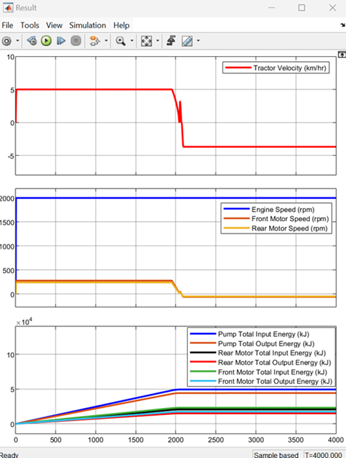
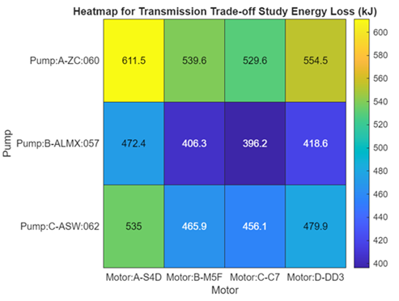

Tractor Model with Simscape
This project contains custom libraries, models, and code to help you model tractors. You can learn to evaluate transmission losses and visualize energy charts for a tractor.
Contents
Tractor For Tillage Operation
Tractor design is an important step to boost efficiency in the agriculture. Developing a tractor model that interacts with the environment requires an accurate model of tire-soil dynamics that includes interaction of tractive elements such as tire and implement with soil, which is a complicated problem to solve. You can accelerate the development process by starting with a system-level analysis to evaluate the options. This project shows how to create a system-level tractor model using Simscape™, Simscape Driveline™ and Simscape Fluids™.
- To open the tractor energy computation model for tillage operation, click Tractor Energy Computation Model.
- You can define your own custom scenario and driver controls to analyze the tractor performance.

- You can visualize tractor velocity, engine, and motor speeds, and compare measured input and output energies for various transmission components using the Result block on the model canvas.

- You can visualize the flow of energy from tractor engine to various components of transmission, and to the axles by looking inside the Transmission Energy Chart Dashboard subsystem on the model canvas.

This project shows how to parameterize components, assemble them to build a model for energy computation of a tractor, and use the model to compute transmission losses for a tillage operation.
1. Parameterize Components: The project contains custom library blocks such as the Tire-Soil Interaction and Implement blocks. The custom Tire block represents the tire-soil interaction based on Bekker equation implementation. This includes tire tractive effort with slip, compaction, and flexing effects. The custom library blocks serve as early-stage design components for the development of a fast running system-level tractor model. The custom library blocks use the Simscape language framework. You can model a hydrostatic CVT transmission using the HydrostaticCVT component. You can parameterize the custom components to suit your application.
2. Build Tractor Energy Computation Model from Components: Build an energy computation model for a tractor by using the parameterized custom components and library blocks from Simscape Foundation & Simscape Driveline. To learn more about the model, see Tractor Energy Computation Model Overview.
3. Create Transmission Energy Charting for a Tractor: After you create the tractor energy computation model, you can compute the transmission losses and visualize the energy flow from the engine to the wheels. To create the transmission energy charting for a tractor, see Create Transmission Energy Charting for a Tractor. This figure shows the energy flow of the tractor and was generated using the Create Transmission Energy Charting for a Tractor workflow.

4. Perform Transmission Trade-Off Study for a Tractor: You can select transmission hydraulic components from available options that minimize energy consumption for a specific agricultural drive cycle.
